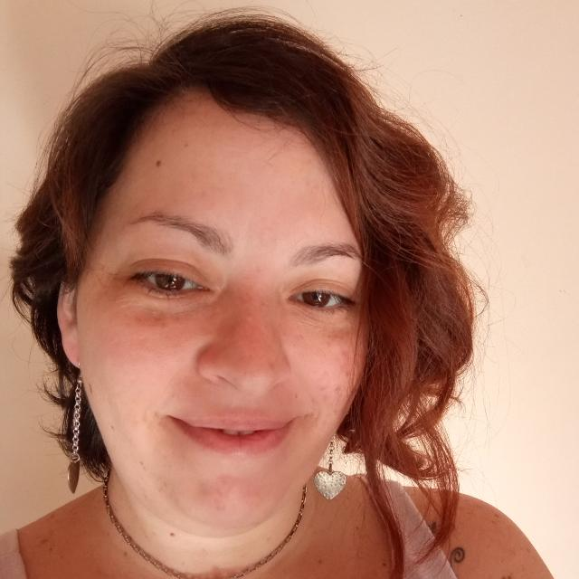

Ana Laura Leone
Acerca de

Ana Laura Leone
Full Stack Developer Jr
- Html
- CSS
- Bootstrap
- Visual Studio Code
Experiencia
Recepcionista administrativa en agencia marítima Independent Ship Agents
- Octubre 2015 - Marzo 2018
- Funciones:
- Recepción personal a clientes y proveedores
- Atención telefónica
- Manejo de correspondencia
- Pago a proveedores
- Manejo de agenda
- Compra de insumos
- Tareas administrativas en gral.
Recepcionista administrativa en Sanatorio Centro
- Diciembre 2013 - Abril 2015
- Funciones:
- Recepción de pacientes e ingreso de datos al Sistema Datatech
- Atención telefónica
- Reserva de turnos
- Autorización de órdenes médicas
- Impresión y archivo
- Tareas administrativas en gral.
Recepcionista administrativa en laboratorio de análisis clínicos Instituto de Bioquímica Clínica
- Octubre 2011 - Julio 2012
- Funciones:
- Recepción de pacientes e ingreso de datos al Sistema Datatech
- Atención telefónica
- Autorización de órdenes médicas
- Impresión y archivo
- Tareas administrativas en gral.
Representante bilingüe de atención al clientes
- Septiembre 2015 - Agosto 2011
- Funciones:
- Atención telefónica a clientes de habla hispana e inglesa
- Resolución de problemas
- Soporte técnico de celulares, redes e internet
- Participación en las cuentas Tracfone Wireless, BMG y Speedy
Estudios
- Full Stack Developer Jr -
Cursado en Argentina Programa 1er y 2da etapa, 2021-2022
- Técnica Superior en Higiene y Seguridad Laboral -
Instituto Laplace, Abril 2015 - Noviembre 2015, Rosario
- Técnica en Saneamiento y Seguridad Industrial -
E.E.T. N°294 "Crucero Gral. Belgrano", Marzo 2013 - Noviembre 2014
- Traductorado Literario y Técnico-Cientifíco en Inglés -
I.E.S N°28 "Olga Cossettini", Marzo 2005 - Noviembre 2007